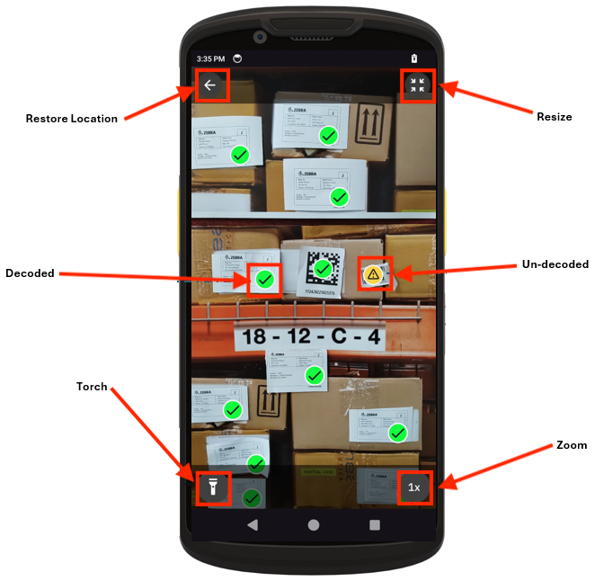

Overview
CameraX is a Jetpack support library for Android that simplifies camera app development by providing a consistent, easy-to-use API across various Android devices. It offers backward compatibility, facilitates smoother camera operations, and integrates seamlessly with existing camera APIs. CameraaX enhances the developer experience with features such as automatic lifecycle management and easy access to use cases such as preview, image capture, and image analysis.
AI Data Capture SDK supports integration with CameraX-based applications by providing:
- EntityTrackerAnalyzer – A CameraX
ImageAnalysis.Analyzerthat detects, decodes and tracksEntities. - Detectors for BarcodeDecode and TextOCR – Tools for building custom Analyzers.
- EntityView – An integrated viewfinder designed to work alongside
EntityTrackerAnalyzer.
For details on compatibility, refer to the CameraX requirements.
EntityTrackerAnalyzer
EntityTrackerAnalyzer implements the ImageAnalysis.Analyzer interface for real-time detection and tracking of entities. It integrates seamlessly with CameraX, processing image frames using a list of detectors to deliver aggregated entity tracking results. The analyzer efficiently manages image buffers and executes detectors asynchronously, ensuring optimal performance. It also automatically handles coordinate system transformations automatically based on the coordinate system value passed to the constructor. Currently, only BarcodeDecoder is supported as a detector.
Use Cases:
- Real-Time Object Tracking - Develop applications that require real-time entity tracking using camera feeds.
- Augmented Reality Experiences - Leverage entity tracking for dynamic augmented reality (AR) experiences that respond to entity movements and interactions.
- Security and Surveillance Systems - Integrate into security systems that monitor and track entities in real-time.
Notes:
- Extensibility - The analyzer is designed to be extended with additional detectors and consumer logic. However, currently only BarcodeDecoder is supported as a detector. Only one instance of a detector can be passed in to the constructor.
- Lifecycle handling - Developers are responsible for managing the session throughout the Android application lifecycle, including the initialization and deinitialization of
EntityTrackerAnalyzer. The application must manage the session, sinceEntityTrackerAnalyzerdoes not handle this internally. - Threading - The processing of image frames is efficiently managed using threads within the
EntityTrackerAnalyzer.
Developer Guide
This section provides a step-by-step guide to setting up a barcode detection system using the Barcode Decoder and EntityTrackerAnalyzer.
Initialize AI Data Capture SDK - Initialize the AI Data Capture SDK to enable Zebra-specific features in the application. This initialization should be performed in
MainActivity. Ensure this initialization step is completed before making any other calls to the AI Data Capture SDK. If the initialization fails, it indicates a critical problem, and the application should not proceed further.if (!AIVisionSDK.getInstance(this.getApplicationContext()).init()) { throw new IllegalStateException("Critical component initialization failed"); }Setup Barcode Decoder - Configure the barcode decoder settings and obtain an instance:
BarcodeDecoder.Settings settings = new BarcodeDecoder.Settings(); decorderExecutor = Executors.newSingleThreadExecutor(); BarcodeDecoder barcodeDecoder = BarcodeDecoder.getBarcodeDecoder(settings, executor).get();Configure Camera Controller - Set up the camera controller to use the
EntityTrackerAnalyzeras theImageAnalysis.Analyzerfor processing image frames:resultsExecutor = Executors.newSingleThreadExecutor(); cameraController.setImageAnalysisAnalyzer( resultsExecutor, new EntityTrackerAnalyzer( Collections.singletonList(barcodeDecoder), ImageAnalysis.COORDINATE_SYSTEM_VIEW_REFERENCED, resultsExecutor, new Consumer<EntityTrackerAnalyzer.Result>() { @Override public void accept(EntityTrackerAnalyzer.Result result) { List<? extends Entity> entities = result.getValue(barcodeDecoder); for (Entity entity : entities) { if (entity instanceof BarcodeEntity) { BarcodeEntity barcodeEntity = (BarcodeEntity) entity; Log.d(TAG, "value: " + barcodeEntity.getValue()); } } } } ) );Configure the Camera Controller Lifecycle - Integrate the camera controller with the activity’s lifecycle.
cameraController.bindToLifecycle(this); previewView.setController(cameraController);Resource Cleanup After Usage - Properly dispose of resources after use to prevent memory leaks and ensure that all resources are released after use:
protected void dispose() {
}// Shutdown executors to release threads if (decorderExecutor!= null && ! resultsExecutor.isShutdown()) { decorderExecutor.shutdown(); decorderExecutor = null; } if (resultsExecutor != null && !resultsExecutor.isShutdown()) { resultsExecutor.shutdown(); ResultsExecutor = null; } // Close any clients or scanners to free up resources if (barcodeScanner != null) { barcodeScanner.close(); barcodeScanner = null; }
Methods
Constructor
public EntityTrackerAnalyzer(
@NonNull List<Detector<? extends List<? extends Entity>>> detectors,
int targetCoordinateSystem,
@NonNull Executor executor,
@NonNull Consumer<EntityTrackerAnalyzer.Result> consumer
)
Constructs an EntityTrackerAnalyzer using specified entity detectors, target coordinate system, an executor, and a consumer. It initializes components for entity tracking, including a buffer manager and an entity tracker, using specified detectors. The analyzer configures entity processing and sets the coordinate system for analysis. The executor is used to execute the consumer.
Currently, only BarcodeDecoder is supported as a detector. Only one detector of each type is accepted. Providing multiple detectors of the same type results in undefined behavior.
The EntityTrackerAnalyzer calculates the output bounding box coordinates based on the targetCoordinateSystem set by the user:
COORDINATE_SYSTEM_ORIGINAL- Bounding boxes are delivered in the analyzer's coordinate system, accounting rotation at the analyzer.COORDINATE_SYSTEM_SENSOR(default) - Bounding boxes are delivered in the sensor's coordinate system after applying rotation at the analyzer.COORDINATE_SYSTEM_VIEW_REFERENCE- Bounding boxes are delivered in the PreviewView coordinate system by applying rotation at the analyzer, transformation from analyzer to sensor, and transformation from sensor to PreviewView.
All transformations take into account the image rotation (from ImageInfo.getRotationDegrees()). For example, with a 90 degree rotation using COORDINATE_SYSTEM_ORIGINAL, the point (0,0) maps to (0, h), where h is the imageProxy’s height.
Parameters:
- Detectors - A list of entity detectors to be utilized for detection and tracking.
- TargetCoordinateSystem - The coordinate system used for image analysis:
COORDINATE_SYSTEM_ORIGINAL,COORDINATE_SYSTEM_SENSORorCOORDINATE_SYSTEM_VIEW_REFERENCED; see Android Developers ImageAnalysis API reference. - executor - The executor responsible for executing the consumer.
- consumer - A consumer function to handle the processing of detected entities.
ImageAnalysis.Analyzer Interface
void analyze(ImageProxy image)
public void analyze(@NonNull ImageProxy image)
Analyzes the image with the Detectors. This method forwards the image to the detectors. Typically, this method is called by ImageAnalysis when a new frame becomes available:
void camerax.EntityTrackerAnalyzer.analyze(ImageProxy image)
Parameters:
- image - An
ImageProxyobject representing the image to be analyzed.
GetDefaultTargetResolution()
public Size getDefaultTargetResolution()
Returns the default target resolution for image analysis in the EntityTrackerAnalyzer.
Return Value: A Size object representing the default resolution for target images.
getTargetCoordinateSystem()
public int getTargetCoordinateSystem()
Returns the current coordinate system used inside the Analyzer. This is passed to the analyzer when it is created via the constructor.
Returns: An integer representing the coordinate system type.
final void updateTransform()
final EntityTrackerAnalyzer.updateTransform()
This method should be implemented to receive a transformation matrix that converts coordinates from the camera sensor’s system to the target system defined in getTargetCoordinateSystem(). It is used for transforming detected coordinates, such as those of a detected face. If the matrix is null, it indicates no valid transformation is available. This can occur if the target system is set to COORDINATE_SYSTEM_ORIGINAL or if the target system is unavailable, such as when the viewfinder is not visible. The method is invoked whenever a new transformation is ready, for example, when the viewfinder is launched or resized.
Returns:
A Matrix object for transformation adjustments.
updateTransform()
public final void updateTransform(@Nullable Matrix matrix)
Receives a transformation matrix that converts coordinates from the camera sensor’s system to the target system, which was passed as targetCoordinateSystem in the constructor.
Parameters:
- matrix - A
Matrixobject for transformation adjustments.
setCropRect(RectF cropRect)
public void setCropRect(RectF cropRect)
Sets the crop rectangle, which specifies the region of the image that the analyzer process for entities. It should be specified in COORDINATE_SYSTEM_SENSOR from ImageAnalysis.
Parameters:
- cropRect - A
RectFobject with crop rectangle.
Detectors
The BarcodeDecoder and TextOCR classes implement a detector interface, enabling efficient image analysis using the process(ImageData imageData) method:
- BarcodeDecoder – This detector method accepts
ImageDataand generates a list ofBarcodeEntityobjects. - TextOCR - This detector interface facilitates integration with CameraX as the frame source, allowing the creation of custom analyzers for detecting and decoding barcodes within frames provided to the
analyze()interface. This is particularly beneficial for applications requiring the combination of multiple detectors within the CameraX analyzer. This detector processesImageDatato analyze textual content.
Developer Guide
To build a custom CameraX Analyzer using the BarcodeDecoder Detector interface, follow these steps:
Step 1: Create a Custom Analyzer
- Implement ImageAnalysis.Analyzer - Implement the
ImageAnalysis.Analyzerinterface and override theanalyze()method.
Step 2: Set Up Decoder and Localizer Settings
- Create BarcodeDecoder Settings: Instantiate a
Settingsobject for the BarcodeDecoder and enable the desired symbologies. - Initialize BarcodeDecoder: Obtain a BarcodeDecoder instance asynchronously using
CompletableFuture.
Step 3: Process Frames
- Override analyze() - CameraX continuously feeds frames to the Analyzers bound to it. Override the
analyzer()interface for their specific functionalities. - Convert ImageProxy to ImageData - The
process()interface requiresImageData. Use thefromImageProxy()method to convert fromImageProxy. - Call process() - Invoke the
process()method on theImageDataobject to initiate barcode detection. - Success Handling - Upon successful detection,
addOnSuccessListeneris activated, retrieving the barcode value and symbology type. - Failure Handling - If detection fails,
addOnFailureListenerlogs the error and closes the image. - Exception Handling - Handle exceptions such as
InvalidInputExceptionandAIVisionSDKExceptionby logging issues during processing and properly closing the image.
Sample Code:
//import necessary packages
public class CompositeAnalyzer implements ImageAnalysis.Analyzer {
@Override
public void analyze(@NonNull ImageProxy image) {
try {
barcodeDecoder.process(ImageData.fromImageProxy(image)).addOnSuccessListener(result ->{
for(Entity<?> bb:result){
// Access bounding box and confidence
BoundingBox boundingBox = bb.getBoundingBox();
float confidence = bb.accuracy();
// Type cast Entity to BarcodeEntity for specific operations
BarcodeEntity barcodeEntity = (BarcodeEntity) bb;
// Access barcode-specific data
String barcodeValue = barcodeEntity.getValue();
String barcodeType = barcodeEntity.getSymbology();
}
image.close();
})
.addOnFailureListener(e ->{
image.close();
});
}
catch (Exception e) {
Log.e(TAG, "Analysis failed: " + e.getMessage());
}
}
}
Entity Viewfinder
Entity Viewfinder is a built-in viewfinder designed for seamless integration with CameraX as a preview component. It surpasses the default PreviewView by offering advanced features, such as rendering and interacting with Entities, making it an ideal choice for developers seeking to deliver a high-performance, intuitive user experience.
This viewfinder is utilized in applications requiring a visual interface for camera operations and entity detection, such as augmented reality applications, barcode scanners, and image recognition systems. It offers user interaction capabilities with camera controls, including zoom levels, flash settings, and draggable viewfinder functionality.

Sample Entity Viewfinder Screen
Key Features:
- Entity Rendering - The viewfinder is optimized to display Entities directly within the camera preview, eliminating the need for additional layers or complex integrations.
- Simplified Styling - Developers can leverage prebuilt StylePens, making it easy to associate visual styles with generated Entities.
- Integrated Camera Controls - The Entity Viewfinder includes built-in camera controls such as zoom and flash, minimizing the need for manual implementation of these features.
- Adjustable and Movable Viewfinder - The Entity Viewfinder can be expanded to full-screen mode and reverted to its original dimensions using onscreen buttons. Additionlly, users can reposition the viewfinder by dragging it anywhere within the screen boundaries.
The Entity Viewfinder mainly consists of three parts:
- EntityView - A visual interface that allows for customization of the viewfinder’s appearance and behavior.
- EntityViewController - A functional interface that manages and implements the operational features of the viewfinder.
- StylePen - A visual representation of the entities of the Entity Viewfinder.
Developer Guide
This guide illustrates the integration and configuration of EntityViewFinder with a camera system using CameraX in an Android application. It covers setting up a viewfinder for camera preview and rendering entities with customizable styles. The guide also demonstrates how to manage user interactions and dynamically update the viewfinder with detected entities.
Integrate EntityView in XML Layout - Define
EntityViewin your XML layout file, specifying attributes to configure its initial behavior and appearance.// Integrate EntityView in XML Layout <com.zebra.ai.vision.viewfinder.EntityView android:id="@+id/entity_view" android:layout_width="match_parent" android:layout_height="match_parent" app:zoom="x2" app:draggable="false" />Initialize EntityView and EntityViewController - Use
findViewById()to obtain a reference to theEntityView, and instantiate anEntityViewControllerwith thisEntityViewinstance and the current context aas a lifecycleOwner. The controller manages the viewfinder’s operations and interactions.Setup Camera - Use
ProcessCameraProviderto manage the camera lifecycle andCameraSelectorto select the back-facing camera.Create a Preview Case - Create a
Previewuse case and set its surface provider using theEntityViewController.Set Up Image Analysis - Define an
ImageAnalysisuse case to analyze the camera feed. Set the resolution and necessary configuration and assign anEntityTrackerAnalyzerto process the images.Bind Camera to Lifecycle - Unbind any previous use cases before binding the camera to the lifecycle with the configured preview and image analysis use cases. Set the camera controller in the
EntityViewController.Register Event Listeners - Register listeners to handle user interactions, such as entity click events, and to manage dynanmic layout changes, like viewfinder resize events. The resize listener allows users to establish field of view and entity coordinates between the preview and analyzer.
Sample code for steps 2 to 6:
// Initialize EntityView EntityView entityView = findViewById(R.id.entity_view); // Initialize the EntityViewController EntityViewController entityViewController = new EntityViewController(entityView, this); // Setup Camera ProcessCameraProvider cameraProvider = ProcessCameraProvider.getInstance(this).get(); CameraSelector cameraSelector = new CameraSelector.Builder() .requireLensFacing(CameraSelector.LENS_FACING_BACK) .build(); // Setup a Preview usecase Preview preview = new Preview.Builder().build(); // Set SurfaceProvider to preview usecase by retrieving it from the entityViewController preview.setSurfaceProvider(entityViewController.getSurfaceProvider()); // Set up image analysis use case ImageAnalysis imageAnalysis = new ImageAnalysis.Builder().setBackpressureStrategy(ImageAnalysis.STRATEGY_KEEP_ONLY_LATEST).build(); imageAnalysis.setAnalyzer(cameraExecutor, entityTrackerAnalyzer); // Unbind previous use cases before rebinding cameraProvider.unbindAll(); // Bind camera to lifecycle and get session camera instance camera = cameraProvider.bindToLifecycle(this, cameraSelector, preview, imageAnalysis); // Configure entity view controller with camera and listeners entityViewController.setCameraController(camera); // Register listener for entity click events entityViewController.registerEntityClickListener(entity -> { // Handle entity click events }); // Register Listener for Viewfinder Resize Events entityViewController.registerViewfinderResizeListener(specs -> { // Handle viewfinder size changes });Initialize StylePens for Entity Visualization - Create various
StylePeninstances for visualizing different entities as required. Configure these pens with desired styles, such as stroke width and icon type.// Initialize various style pens as per the use case private void initializeStylePens() { StylePen qrCodeBoundingBoxPen = BoundingBoxDrawPen.builder() .setStroke(8f, Color.BLUE) .build();
}StylePen upcaIconPen = IconDrawPen.builder() .setIconStyle(IconStyle.SUCCESSFUL_DECODE) .setClickable(true) .build();Apply StylePens and Render Entities - In the analyzer results consumer method, clear previous entities and retrieve detected entities. Apply the appropriate
StylePento each entity based on your application use case and add them to theEntityViewController. Finally, render all entities on the viewfinder at once for optimized performance.// Analyzer results consumer method private void handleEntities(EntityTrackerAnalyzer.Result result) {
}// Clear previous entities entityViewController.removeAll(); // Get detected entities List<? extends Entity> entities = result.getValue(barcodeDecoder); if (entities != null) { Log.i(TAG, "Handle entities: " + entities.size()); // Process each entity for (Entity entity : entities) { if (!(entity instanceof BarcodeEntity)) { continue; } BarcodeEntity barcodeEntity = (BarcodeEntity) entity; int symbology = barcodeEntity.getSymbology(); // QR Code symbology if (isQRCodeSymbology(symbology)) { // Associate style pen initialized for QR codes entityViewController.add(barcodeEntity, qrCodeBoundingBoxPen); } // UPCA symbology if (isUPCASymbology(symbology)) { // Associate style pen initialized for UPCA barcodes entityViewController.add(barcodeEntity, upcaIconPen); } } } // Render all entities at once entityViewController.render();
Workflow for integrating Entity Viewfinder with EntityTrackerAnalyzer
EntityView
The EntityView is a custom view designed to render the visual interface of a viewfinder. It is the UI representation of the Entity Viewfinder, displaying the camera preview along with interactive controls. It includes camera controls such as zoom and flash, as well as viewfinder-related features like a full-screen toggle button and a reset position button, providing essential functionality for managing the viewfinder and camera operations.
This view is meant to be integrated into your XML layout file to define the display area for the viewfinder interface. The EntityView should be used in conjunction with the EntityViewController to ensure proper operational management and seamless integration within your application.
Currently the programmatic instantiation of the viewfinder is not supported. It is recommended to integrate it in the application using XML-based UI layouts.
Methods
EntityView(Context context)
EntityView(Context context) throws AIVisionSDKException
Constructor that creates a new EntityView with the given context.
Parameters:
- context - The activity context.
Exceptions:
- AIVisionSDKException - Thrown if the context is null.
EntityView(Context context, AttributeSet attrs)
EntityView(Context context, AttributeSet attrs) throws AIVisionSDKException
Constructor that initializes the view with XML attributes.
Parameters:
- context - The activity context.
- attrs - The XML attributes for configuration.
Exceptions:
- AIVisionSDKException - Thrown if the context is null.
EntityView(Context context, AttributeSet attrs, int defStyleAttr)
EntityView(Context context, AttributeSet attrs, int defStyleAttr)
Constructor that initializes the view with XML attributes and a default style.
Parameters:
- context - The activity context.
- attrs - The XML attributes for configuration.
- defStyleAttr - Default style attribute.
EntityView(Context context, AttributeSet attrs, int defStyleAttr, int defStyleRes)
EntityView(Context context, AttributeSet attrs, int defStyleAttr, int defStyleRes)
Constructor that initializes the view with XML attributes, default style, and default resources.
Parameters:
- context - The activity context.
- attrs - The XML attribute set for configuration.
- defStyleAttr - The default style attribute.
EntityView(Context context, AttributeSet attrs, int defStyleAttr, int defStyleRes)
EntityView(Context context, AttributeSet attrs, int defStyleAttr, int defStyleRes)
Constructor that initializes the view with XML attributes, a default style, and default resources.
Parameters:
- context - The activity context.
- attrs - The XML attribute set for configuration.
- defStyleAttr - The default style attribute.
- defStyleRes - The default style resource.
IViewfinderController getViewfinderController()
IViewfinderController getViewfinderController()
Returns the viewfinder controller instance.
Return Value: Returns either an instance of IViewfinderController or null if the view is not properly initialized.
NOTE: This API is not intended for developers use.
EntityViewController
Related Guides: